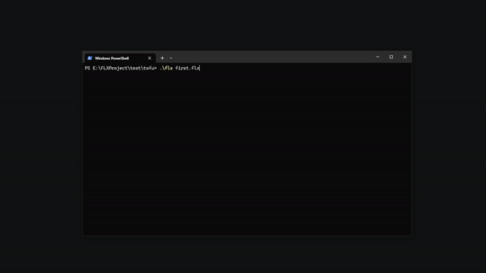

FLX Documentation
Getting started
This section shows the minimum structure needed to run an FLX project.
The goal is to understand how a project is organized, how its files relate to one another, and how to run a first working runtime.
Minimum structure
An FLX project can start with very few files.
my-first-flx/
│
├── first.flx
├── world.json
├── tofu.json
└── tofu.js
Each file serves a specific purpose within the runtime.
Project file
Every project starts with a .flx file.
This file defines the project's metadata and root object.
name=My first FLX
version=1.0
engine=0.3.0
root=world
title=My first FLX
We have not declared machine or input.mapping. FLX will use their default configurations.
Root object
The root object organizes the runtime's other objects and active logic.
In this example, the root object represents the world containing a single object: a block of tofu.
{
"$schema": "https://flxforge.github.io/FLXEngine/schemas/object.schema.json",
"children": {
"tofu": "tofu"
}
}
Object
Objects define data and properties used during execution.
An object can contain:
- Shape
- Movement
- Scripts
- Collisions
- Custom data
{
"$schema": "https://flxforge.github.io/FLXEngine/schemas/object.schema.json",
"control": {
"player": 1
},
"origin": {
"x": 311,
"y": 228
},
"size": {
"width": 18,
"height": 24
},
"visual": {
"color": "white",
"representation": [
{
"primitive": "rectangle"
}
]
},
"mechanics": {
"type": "direct",
"motion": {
"speed": {
"start": 120
}
}
},
"behavior": {
"scripts": [ "tofu" ]
}
}
Scripts
Scripts use JavaScript to define behavior.
During runtime, FLX automatically executes certain lifecycle functions.
/// <reference path="https://flxforge.github.io/FLXEngine/scripts/flx.d.ts" />
const MOVE = direction(0);
function motion(tofu) {
move_horizontal(tofu, input_direction(tofu, MOVE, HORIZONTAL));
move_vertical(tofu, input_direction(tofu, MOVE, VERTICAL));
}
Execution
Once the project files are defined, the runtime can be launched by specifying the
.flx file.
.\flx validate first.flx
FLX will validate the project's structure and resources.
.\flx run first.flx
If everything is configured correctly, the runtime will load the root object, initialize the objects and start the execution cycle.
FLX will open a window using the default machine. You will see the tofu and be able to move it with WASD, the arrow keys or a joystick.

Congratulations! You have created your first FLX project.
You now have a world, an object and behavior running in FLX.
Try changing white to another color, modifying width and height, or changing speed.start. Save the files and run the project again.